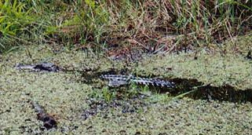
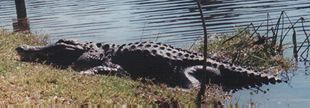

Pictures of Florida's Wild Animals
Pictures of Florida's Wild Animals
|
Alligator Most people outside of Florida can't believe we have wild alligators running around. These guys live in every part of the state, as long as they can get some kind of swamp, and get into all kinds of messes. Generally afraid of humans, you have to look for them, as they are masters at hiding. A relic of the past, they don't need to evolve. They are almost perfectly suited to do what they do. They are armor plated up top, have sharp teeth, are very strong, and possess one mean tail. One last thing. , this makes them unafraid of humans and as benign as they generally are, they are natural killers, and could easily kill a person if desired.
  |
Commonality list This is my list of the likelihood of seeing various creatures based on my experiences. Of course, you have to be in the right habitat, the odds of seeing a Dolphin in the forest are not very good. Also, these are based a lot on my local area of Hillsborough County (Tampa). A hyperlink means some kind of info and probably some photos are available. Common If you are in the appropriate habitat, you should run into one of these. In many cases, you can't avoid them.
Uncommon These are harder to find. You'll have to spend some time outdoors and probably look a little for these. However, odds are you'll find one after a little effort.
Rare Difficult to find. Usually, it's just luck to find one, or you'll have to look very hard. You'll probably only see one every six months.
Ultra Rare Very difficult to find. Most people, even people who spend a fair amount of time outdoors, like me, never see one. Consider yourself truely priviledged if you do catch a glimpse of one in the wild.
|